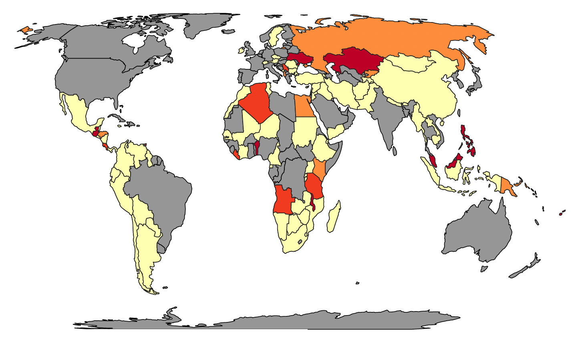
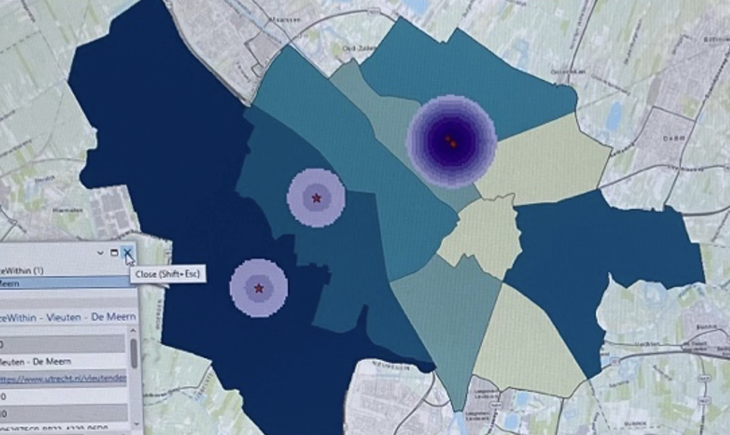
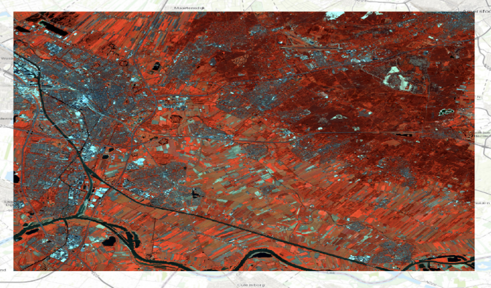
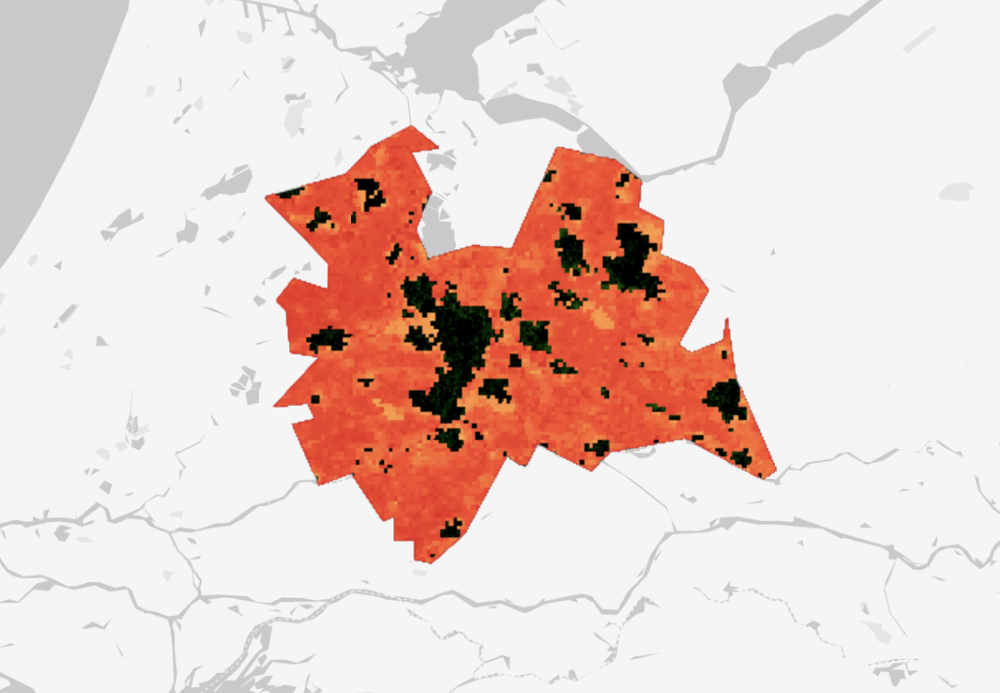

Digital Maps
Digital maps are computerized, interactive representations of geographic areas. They integrate spatial data with advanced technology to create detailed visualizations of physical locations. Creating maps, blending the science and art of cartography, ensures accuracy in representation while emphasizing aesthetic appeal and usability. During the course, I developed several digital maps that illustrate diverse geographical phenomena and spatial relationships. Six of these maps are showcased here, each providing insights into land cover classifications, vegetation density assessments, digital terrain visualizations, carbon sequestration, and the impact of disasters on communities. These maps demonstrate not only technical proficiency in geographic information systems (GIS) and remote sensing but also the creative application of cartographic principles in visual storytelling and data analysis.
- Choropleth map
- Livelihood disruption by disasters
-
A choropleth map is a thematic map where areas are shaded or pattered in proportion to the value of a variable being represented, such as population density, deforestation rates or incidence of disease. These maps are widely used to visualise how a measurement varies across a geographic area, making complex data more accessible and easier to understand.
- Read More
- Vector Data
- Tree density in Utrecht
-
Vector data, represented through points, lines, and polygons, is an important component of geospatial analysis. Points, which define specific locations, are essential for mapping and analyzing discrete features such as trees, buildings, or landmarks. Vector data is relevant, as it is know for its precision and versatility, enabling detailed spatial analysis and decision-making. ArcGIS Pro is a powerful tool for creating vector maps, allowing users to import, visualize, and analyze vector data through an intuitive interface. With ArcGIS Pro, users can perform various geospatial operations, customize maps, and share their results with a broader audience.
- Read More
- Land Cover classification
- Vegetation in Utrecht
-
Land cover classification systems categorize the physical material on the surface of the earth, such as vegetation, urban infrastructure, water bodies, and bare soil. These systems are crucial for environmental monitoring, urban planning, agriculture, and climate studies, as they provide detailed information about the Earth's surface.
- Read More
- Digital Terrain Model (DTM)
- Schiermonnikoog
-
 A Digital Terrain Model (DTM) is a 3D representation of a terrain's surface, in which vegetation, buildings, and other objects are not visible. It provides accurate elevation data, capturing the natural landscape's contours and features. DTMs are crucial for a variety of applications, including environmental management, urban planning, and disaster response. By offering precise topographical information, DTMs enable effective analysis of the ground, watershed modeling, and infrastructure development.
A Digital Terrain Model (DTM) is a 3D representation of a terrain's surface, in which vegetation, buildings, and other objects are not visible. It provides accurate elevation data, capturing the natural landscape's contours and features. DTMs are crucial for a variety of applications, including environmental management, urban planning, and disaster response. By offering precise topographical information, DTMs enable effective analysis of the ground, watershed modeling, and infrastructure development. - Read More
- Satellite Imagery Mapping
- Carbon sequestration in Utrecht
-
Satellite imagery mapping is a widely-used technique that uses satellite data to create detailed maps of the Earth's surface. This method is highly relevant for monitoring environmental changes, managing natural resources, and understanding geographical patterns. In the context of carbon sequestration, satellite imagery helps us measure and analyze carbon storage and fluxes in ecosystems.
- Read More
- Lidar Webscene
- 3D visualisation of a part of the Utrechtse Heuvelrug
-
 A LiDAR webscene is a 3D visualisation of terrain features using Light Detection and Ranging (LiDAR) data. This technology uses laser pulses to generate precise, high-resolution maps of the Earth's surface, capturing details about topography, vegetation, and built structures. LiDAR webscenes are important because they provide an immersive way to explore and analyze spatial data, valuable for environmental monitoring, urban planning, and disaster management.
A LiDAR webscene is a 3D visualisation of terrain features using Light Detection and Ranging (LiDAR) data. This technology uses laser pulses to generate precise, high-resolution maps of the Earth's surface, capturing details about topography, vegetation, and built structures. LiDAR webscenes are important because they provide an immersive way to explore and analyze spatial data, valuable for environmental monitoring, urban planning, and disaster management.